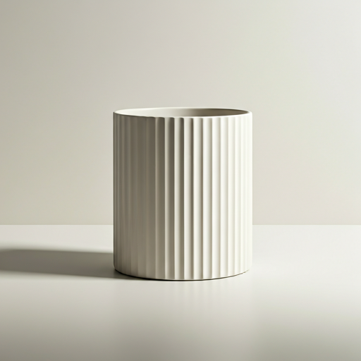
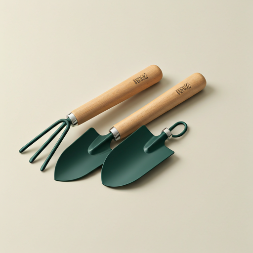

Maceta Nordic Moss
Maceta de cerámica con diseño moderno y minimalista.
Todo lo necesario para el cuidado, trasplante y realce estético de tus plantas.

Maceta de cerámica con diseño moderno y minimalista.

Rociador manual para mantener la humedad ambiental ideal.

Regadera metálica de precisión para evitar encharcamientos.

Palas y rastrillo para el trasplante y remoción de tierra.